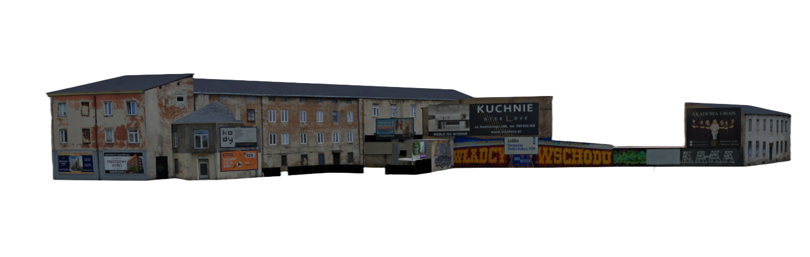
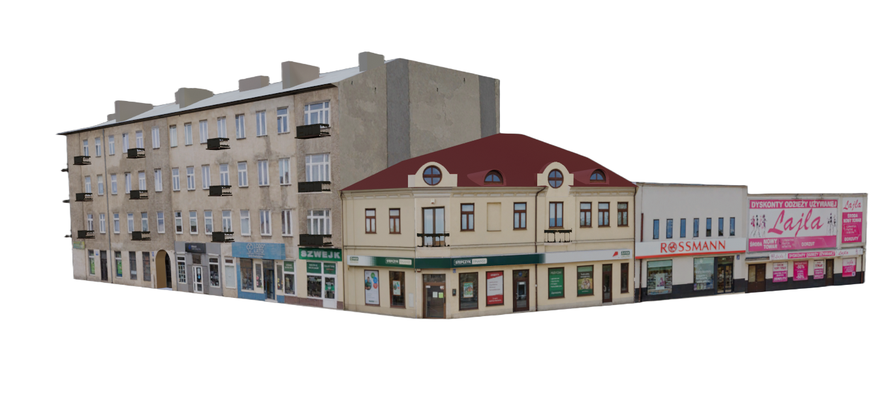

Długoterminowość
Mapa powstaje miesiącami. Szukamy osób, które zostaną z nami na dłużej i będą regularnie pracować nad swoją częścią.
Najnowsze wpisy i informacje o postępach projektu.
Pobierz najnowszą wersję mapy i dodatków.
Poprzednie wersje mapy.
Modyfikacje stworzone przez społeczność. Szukaj, filtruj i sortuj.



Mapa powstaje miesiącami. Szukamy osób, które zostaną z nami na dłużej i będą regularnie pracować nad swoją częścią.
Szukamy osób, które potrafią dokładnie wykonywać swoją pracę. Ulice, spliny i obiekty muszą pasować do prawdziwego Lublina, więc liczą się szczegóły.
Nie musisz niczego umieć na starcie. Wszystkiego możemy nauczyć od zera, liczy się chęć nauki.
Zgłoś się przez ticket na naszym Discordzie i daj znać, gdy zmieniasz plany. W tak małym zespole każdy musi wiedzieć, na czym stoimy.
Napisz na Discordzie


Edytor, Blender
Edytor, Blender, PR
Lublin to największe miasto we wschodniej Polsce i stolica województwa lubelskiego. Położony nad Bystrzycą, słynie z malowniczego Starego Miasta, Zamku Lubelskiego z Kaplicą Trójcy Świętej oraz Bramy Krakowskiej. To ważny ośrodek akademicki z kilkoma uczelniami i dziesiątkami tysięcy studentów. Lublin ma jedną z największych sieci trolejbusowych w Polsce, a komunikację miejską obsługuje ZTM Lublin.

.jpg)